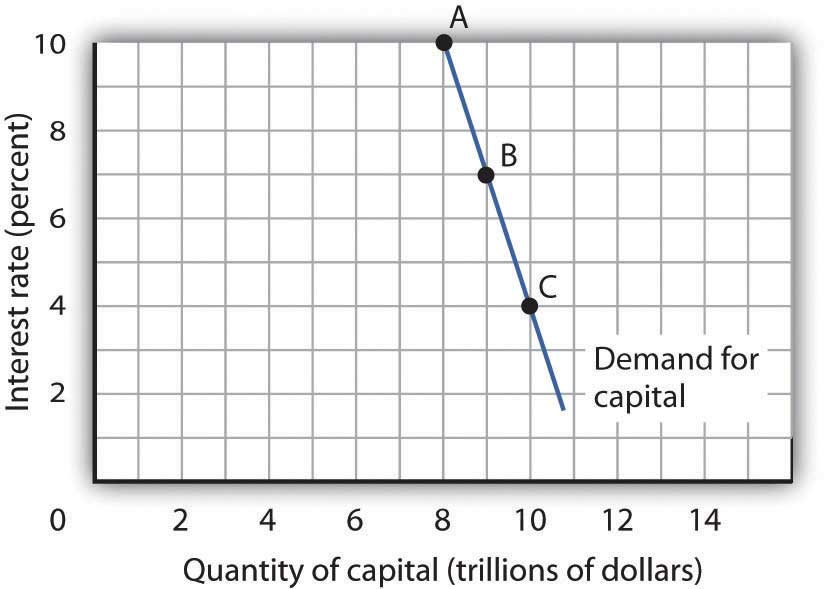
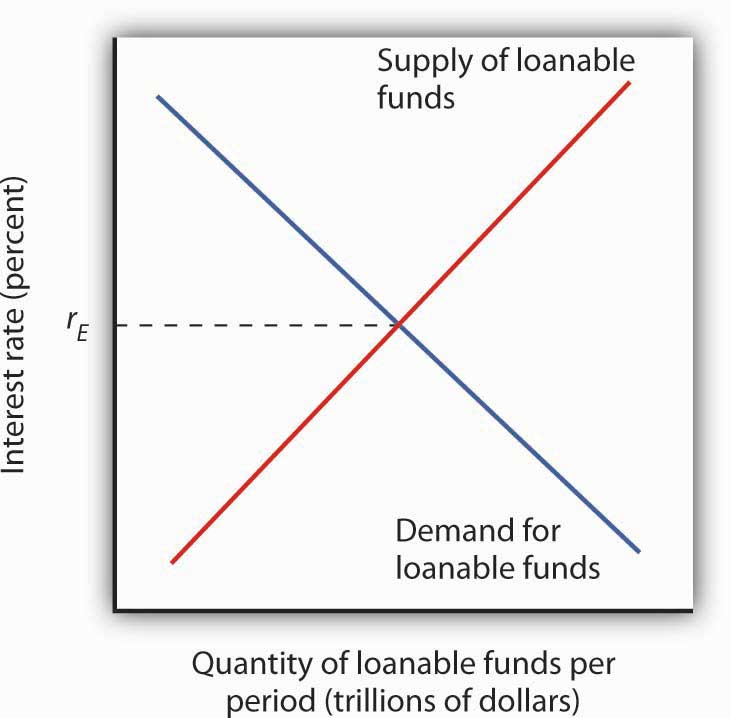
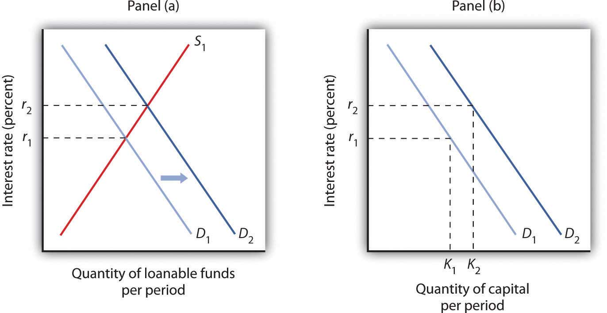
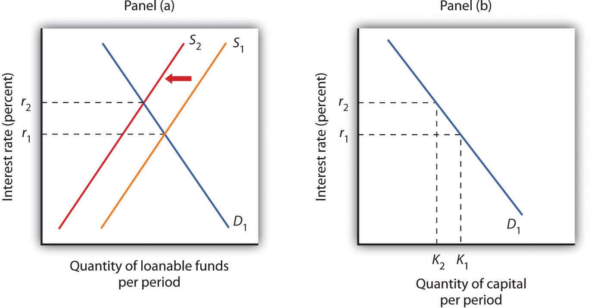

The quantity of capital that firms employ in their production of goods and services has enormously important implications for economic activity and for the standard of living people in the economy enjoy. Increases in capital increase the marginal product of labor and boost wages at the same time they boost total output. An increase in the stock of capital therefore tends to raise incomes and improve the standard of living in the economy.
Capital is often a fixed factor of production in the short run. A firm cannot quickly retool an assembly line or add a new office building. Determining the quantity of capital a firm will use is likely to involve long-run choices.
A firm uses additional units of a factor until marginal revenue product equals marginal factor cost. Capital is no different from other factors of production, save for the fact that the revenues and costs it generates are distributed over time. As the first step in assessing a firm’s demand for capital, we determine the present value of marginal revenue products and marginal factor costs.
Suppose Carol Stein is considering the purchase of a new $95,000 tractor for her farm. Ms. Stein expects to use the tractor for five years and then sell it; she expects that it will sell for $22,000 at the end of the five-year period. She has the $95,000 on hand now; her alternative to purchasing the tractor could be to put $95,000 in a bond account earning 7% annual interest.
Ms. Stein expects that the tractor will bring in additional annual revenue of $50,000 but will cost $30,000 per year to operate, for net revenue of $20,000 annually. For simplicity, we shall suppose that this net revenue accrues at the end of each year.
Should she buy the tractor? We can answer this question by computing the tractor’s net present value (NPV)The value equal to the present value of all the revenues expected from an asset minus the present value of all the costs associated with it., which is equal to the present value of all the revenues expected from an asset minus the present value of all the costs associated with it. We thus measure the difference between the present value of marginal revenue products and the present value of marginal factor costs. If NPV is greater than zero, purchase of the asset will increase the profitability of the firm. A negative NPV implies that the funds for the asset would yield a higher return if used to purchase an interest-bearing asset. A firm will maximize profits by acquiring additional capital up to the point that the present value of capital’s marginal revenue product equals the present value of marginal factor cost.
If the revenues generated by an asset in period n equal Rn and the costs in period n equal Cn, then the net present value NPV0 of an asset expected to last for n years is:
Equation 13.5
To purchase the tractor, Ms. Stein pays $95,000. She will receive additional revenues of $50,000 per year from increased planting and more efficient harvesting, less the operating cost per year of $30,000, plus the $22,000 she expects to get by selling the tractor at the end of five years. The net present value of the tractor, NPV0 is thus given by:
Given the cost of the tractor, the net returns Ms. Stein projects, and an interest rate of 7%, Ms. Stein will increase her profits by purchasing the tractor. The tractor will yield a return whose present value is $2,690 greater than the return that could be obtained by the alternative of putting the $95,000 in a bond account yielding 7%.
Ms. Stein’s acquisition of the tractor is called investment. Economists define investmentAn addition to capital stock. as an addition to capital stock. Any acquisition of new capital goods therefore qualifies as investment.
Our analysis of Carol Stein’s decision regarding the purchase of a new tractor suggests the forces at work in determining the economy’s demand for capital. In deciding to purchase the tractor, Ms. Stein considered the price she would have to pay to obtain the tractor, the costs of operating it, the marginal revenue product she would receive by owning it, and the price she could get by selling the tractor when she expects to be done with it. Notice that with the exception of the purchase price of the tractor, all those figures were projections. Her decision to purchase the tractor depends almost entirely on the costs and benefits she expects will be associated with its use.
Finally, Ms. Stein converted all those figures to a net present value based on the interest rate prevailing at the time she made her choice. A positive NPV means that her profits will be increased by purchasing the tractor. That result, of course, depends on the prevailing interest rate. At an interest rate of 7%, the NPV is positive. At an interest rate of 8%, the NPV would be negative. At that interest rate, Ms. Stein would do better to put her funds elsewhere.
At any one time, millions of choices like that of Ms. Stein concerning the acquisition of capital will be under consideration. Each decision will hinge on the price of a particular piece of capital, the expected cost of its use, its expected marginal revenue product, its expected scrap value, and the interest rate. Not only will firms be considering the acquisition of new capital, they will be considering retaining existing capital as well. Ms. Stein, for example, may have other tractors. Should she continue to use them, or should she sell them? If she keeps them, she will experience a stream of revenues and costs over the next several periods; if she sells them, she will have funds now that she could use for something else. To decide whether a firm should keep the capital it already has, we need an estimate of the NPV of each unit of capital. Such decisions are always affected by the interest rate. At higher rates of interest, it makes sense to sell some capital rather than hold it. At lower rates of interest, the NPV of holding capital will rise.
Because firms’ choices to acquire new capital and to hold existing capital depend on the interest rate, the demand curve for capitalShows the quantity of capital firms intend to hold at each interest rate. in Figure 13.1 "The Demand Curve for Capital", which shows the quantity of capital firms intend to hold at each interest rate, is downward-sloping. At point A, we see that at an interest rate of 10%, $8 trillion worth of capital is demanded in the economy. At point B, a reduction in the interest rate to 7% increases the quantity of capital demanded to $9 trillion. At point C, at an interest rate of 4%, the quantity of capital demanded is $10 trillion. A reduction in the interest rate increases the quantity of capital demanded.
Figure 13.1 The Demand Curve for Capital
The quantity of capital firms will want to hold depends on the interest rate. The higher the interest rate, the less capital firms will want to hold.
The demand curve for capital for the economy is found by summing the demand curves of all holders of capital. Ms. Stein’s demand curve, for example, might show that at an interest rate of 8%, she will demand the capital she already has—suppose it is $600,000 worth of equipment. If the interest rate drops to 7%, she will add the tractor; the quantity of capital she demands rises to $695,000. At interest rates greater than 8%, she might decide to reduce her maintenance efforts for some of the capital she already has; the quantity of capital she demands would fall below $600,000. As with the demand for capital in the economy, we can expect individual firms to demand a smaller quantity of capital when the interest rate is higher.
Why might the demand for capital change? Because the demand for capital reflects the marginal revenue product of capital, anything that changes the marginal revenue product of capital will shift the demand for capital. Our search for demand shifters must thus focus on factors that change the marginal product of capital, the prices of the goods capital produces, and the costs of acquiring and holding capital. Let us discuss some factors that could affect these variables and thus shift the demand for capital.
Choices concerning capital are always based on expectations. Net present value is computed from the expected revenues and costs over the expected life of an asset. If firms’ expectations change, their demand for capital will change. If something causes firms to revise their sales expectations upward (such as stronger than expected sales in the recent past), it is likely to increase their demand for capital. Similarly, an event that dampens firms’ expectations (such as recent weak sales) is likely to reduce their demand for capital.
Technological changes can increase the marginal product of capital and thus boost the demand for capital. The discovery of new ways to integrate computers into production processes, for example, has dramatically increased the demand for capital in the last few years. Many universities are adding new classroom buildings or renovating old ones so they can better use computers in instruction, and businesses use computers in nearly every facet of operations.
Ultimately, the source of demand for factors of production is the demand for the goods and services produced by those factors. Economists say that the demand for a factor is a “derived” demand—derived, that is, from the demand for what the factor produces. As population and incomes expand, we can expect greater demand for goods and services, a change that will increase the demand for capital.
Firms achieve the greatest possible output for a given total cost by operating where the ratios of marginal product to factor price are equal for all factors of production. For a firm that uses labor (L) and capital (K), for example, this requires that MPL/PL = MPK/PK, where MPL and MPK are the marginal products of labor and capital, respectively, and PL and PK are the prices of labor and capital, respectively. Suppose these equalities hold and the price of labor rises. The ratio of the marginal product of labor to its price goes down, and the firm substitutes capital for labor. Similarly, an increase in the price of capital, all other things unchanged, would cause firms to substitute other factors of production for capital. The demand for capital, therefore, would fall.
Government can indirectly affect the price of capital through changes in tax policy. For example, suppose the government enacts an investment tax credit for businesses, that is, a deduction of a certain percentage of their spending on capital from their profits before paying taxes. Such a policy would effectively lower the price of capital, causing firms to substitute capital for other factors of production and increasing the demand for capital. The repeal of an investment tax credit would lead to a decrease in the demand for capital.
When a firm decides to expand its capital stock, it can finance its purchase of capital in several ways. It might already have the funds on hand. It can also raise funds by selling shares of stock, as we discussed in a previous chapter. When a firm sells stock, it is selling shares of ownership of the firm. It can borrow the funds for the capital from a bank. Another option is to issue and sell its own bonds. A bondA promise to pay back a certain amount at a certain time. is a promise to pay back a certain amount at a certain time. When a firm borrows from a bank or sells bonds, of course, it accepts a liability—it must make interest payments to the bank or the owners of its bonds as they come due.
Regardless of the method of financing chosen, a critical factor in the firm’s decision on whether to acquire and hold capital and on how to finance the capital is the interest rate. The role of the interest rate is obvious when the firm issues its own bonds or borrows from a bank. But even when the firm uses its own funds to purchase the capital, it is forgoing the option of lending those funds directly to other firms by buying their bonds or indirectly by putting the funds in bank accounts, thereby allowing the banks to lend the funds. The interest rate gives the opportunity cost of using funds to acquire capital rather than putting the funds to the best alternative use available to the firm.
The interest rate is determined in a market in the same way that the price of potatoes is determined in a market: by the forces of demand and supply. The market in which borrowers (demanders of funds) and lenders (suppliers of funds) meet is the loanable funds marketThe market in which borrowers (demanders of funds) and lenders (suppliers of funds) meet..
We will simplify our model of the role that the interest rate plays in the demand for capital by ignoring differences in actual interest rates that specific consumers and firms face in the economy. For example, the interest rate on credit cards is higher than the mortgage rate of interest, and large, established companies can borrow funds or issue bonds at lower interest rates than new, start-up companies can. Interest rates that firms face depend on a variety of factors, such as riskiness of the loan, the duration of the loan, and the costs of administering the loan. However, since we will focus on general tendencies that cause interest rates to rise or fall and since the various interest rates in the economy tend to move up and down together, the conclusions we reach about the market for loanable funds and how firms and consumers respond to interest rate changes will still be valid.
In the previous section we learned that a firm’s decision to acquire and keep capital depends on the net present value of the capital in question, which in turn depends on the interest rate. The lower the interest rate, the greater the amount of capital that firms will want to acquire and hold, since lower interest rates translate into more capital with positive net present values. The desire for more capital means, in turn, a desire for more loanable funds. Similarly, at higher interest rates, less capital will be demanded, because more of the capital in question will have negative net present values. Higher interest rates therefore mean less funding demanded.
Figure 13.2 The Demand and Supply of Loanable Funds
At lower interest rates, firms demand more capital and therefore more loanable funds. The demand for loanable funds is downward-sloping. The supply of loanable funds is generally upward-sloping. The equilibrium interest rate, rE, will be found where the two curves intersect.
Thus the demand for loanable funds is downward-sloping, like the demand for virtually everything else, as shown in Figure 13.2 "The Demand and Supply of Loanable Funds". The lower the interest rate, the more capital firms will demand. The more capital that firms demand, the greater the funding that is required to finance it.
Lenders are consumers or firms that decide that they are willing to forgo some current use of their funds in order to have more available in the future. Lenders supply funds to the loanable funds market. In general, higher interest rates make the lending option more attractive.
For consumers, however, the decision is a bit more complicated than it is for firms. In examining consumption choices across time, economists think of consumers as having an expected stream of income over their lifetimes. It is that expected income that defines their consumption possibilities. The problem for consumers is to determine when to consume this income. They can spend less of their projected income now and thus have more available in the future. Alternatively, they can boost their current spending by borrowing against their future income.
SavingIncome not spent on consumption. is income not spent on consumption. (We shall ignore taxes in this analysis.) DissavingConsumption that exceeds income during a given period. occurs when consumption exceeds income during a period. Dissaving means that the individual’s saving is negative. Dissaving can be financed either by borrowing or by using past savings. Many people, for example, save in preparation for retirement and then dissave during their retirement years.
Saving adds to a household’s wealth. Dissaving reduces it. Indeed, a household’s wealth is the sum of the value of all past saving less all past dissaving.
We can think of saving as a choice to postpone consumption. Because interest rates are a payment paid to people who postpone their use of wealth, interest rates are a kind of reward paid to savers. Will higher interest rates encourage the behavior they reward? The answer is a resounding “maybe.” Just as higher wages might not increase the quantity of labor supplied, higher interest rates might not increase the quantity of saving. The problem, once again, lies in the fact that the income and substitution effects of a change in interest rates will pull in opposite directions.
Consider a hypothetical consumer, Tom Smith. Let us simplify the analysis of Mr. Smith’s choices concerning the timing of consumption by assuming that there are only two periods: the present period is period 0, and the next is period 1. Suppose the interest rate is 8% and his income in both periods is expected to be $30,000.
Mr. Smith could, of course, spend $30,000 in period 0 and $30,000 in period 1. In that case, his saving equals zero in both periods. But he has alternatives. He could, for example, spend more than $30,000 in period 0 by borrowing against his income for period 1. Alternatively, he could spend less than $30,000 in period 0 and use his saving—and the interest he earns on that saving—to boost his consumption in period 1. If, for example, he spends $20,000 in period 0, his saving in period 0 equals $10,000. He will earn $800 interest on that saving, so he will have $40,800 to spend in the next period.
Suppose the interest rate rises to 10%. The increase in the interest rate has boosted the price of current consumption. Now for every $1 he spends in period 0 he gives up $1.10 in consumption in period 1, instead of $1.08, which was the amount that would have been given up in consumption in period 1 when the interest rate was 8%. A higher price produces a substitution effect that reduces an activity—Mr. Smith will spend less in the current period due to the substitution effect. The substitution effect of a higher interest rate thus boosts saving. But the higher interest rate also means that he earns more income on his saving. Consumption in the current period is a normal good, so an increase in income can be expected to increase current consumption. But an increase in current consumption implies a reduction in saving. The income effect of a higher interest rate thus tends to reduce saving. Whether Mr. Smith’s saving will rise or fall in response to a higher interest rate depends on the relative strengths of the substitution and income effects.
To see how an increase in interest rates might reduce saving, imagine that Mr. Smith has decided that his goal is to have $40,800 to spend in period 1. At an interest rate of 10%, he can reduce his saving below $10,000 and still achieve his goal of having $40,800 to spend in the next period. The income effect of the increase in the interest rate has reduced his saving, and consequently his desire to supply funds to the loanable funds market.
Because changes in interest rates produce substitution and income effects that pull saving in opposite directions, we cannot be sure what will happen to saving if interest rates change. The combined effect of all consumers’ and firms’ decisions, however, generally leads to an upward-sloping supply curve for loanable funds, as shown in Figure 13.2 "The Demand and Supply of Loanable Funds". That is, the substitution effect usually dominates the income effect.
The equilibrium interest rate is determined by the intersection of the demand and supply curves in the market for loanable funds.
If the quantity of capital demanded varies inversely with the interest rate, and if the interest rate is determined in the loanable funds market, then it follows that the demand for capital and the loanable funds market are interrelated. Because the acquisition of new capital is generally financed in the loanable funds market, a change in the demand for capital leads to a change in the demand for loanable funds—and that affects the interest rate. A change in the interest rate, in turn, affects the quantity of capital demanded on any demand curve.
The relationship between the demand for capital and the loanable funds market thus goes both ways. Changes in the demand for capital affect the loanable funds market, and changes in the loanable funds market can affect the quantity of capital demanded.
Figure 13.3 "Loanable Funds and the Demand for Capital" suggests how an increased demand for capital by firms will affect the loanable funds market, and thus the quantity of capital firms will demand. In Panel (a) the initial interest rate is r1. At r1 in Panel (b) K1 units of capital are demanded (on curve D1). Now suppose an improvement in technology increases the marginal product of capital, shifting the demand curve for capital in Panel (b) to the right to D2. Firms can be expected to finance the increased acquisition of capital by demanding more loanable funds, shifting the demand curve for loanable funds to D2 in Panel (a). The interest rate thus rises to r2. Consequently, in the market for capital the demand for capital is greater and the interest rate is higher. The new quantity of capital demanded is K2 on demand curve D2.
Figure 13.3 Loanable Funds and the Demand for Capital
The interest rate is determined in the loanable funds market, and the quantity of capital demanded varies with the interest rate. Thus, events in the loanable funds market and the demand for capital are interrelated. If the demand for capital increases to D2 in Panel (b), the demand for loanable funds is likely to increase as well. Panel (a) shows the result in the loanable funds market—a shift in the demand curve for loanable funds from D1 to D2 and an increase in the interest rate from r1 to r2. At r2, the quantity of capital demanded will be K2, as shown in Panel (b).
Events in the loanable funds market can also affect the quantity of capital firms will hold. Suppose, for example, that consumers decide to increase current consumption and thus to supply fewer funds to the loanable funds market at any interest rate. This change in consumer preferences shifts the supply curve for loanable funds in Panel (a) of Figure 13.4 "A Change in the Loanable Funds Market and the Quantity of Capital Demanded" from S1 to S2 and raises the interest rate to r2. If there is no change in the demand for capital D1, the quantity of capital firms demand falls to K2 in Panel (b).
Figure 13.4 A Change in the Loanable Funds Market and the Quantity of Capital Demanded
A change that begins in the loanable funds market can affect the quantity of capital firms demand. Here, a decrease in consumer saving causes a shift in the supply of loanable funds from S1 to S2 in Panel (a). Assuming there is no change in the demand for capital, the quantity of capital demanded falls from K1 to K2 in Panel (b).
Our model of the relationship between the demand for capital and the loanable funds market thus assumes that the interest rate is determined in the market for loanable funds. Given the demand curve for capital, that interest rate then determines the quantity of capital firms demand.
Table 13.2 "Two Routes to Changes in the Quantity of Capital Demanded" shows that a change in the quantity of capital that firms demand can begin with a change in the demand for capital or with a change in the demand for or supply of loanable funds. A change in the demand for capital affects the demand for loanable funds and hence the interest rate in the loanable funds market. The change in the interest rate leads to a change in the quantity of capital demanded. Alternatively, a change in the loanable funds market, which leads to a change in the interest rate, causes a change in quantity of capital demanded.
Table 13.2 Two Routes to Changes in the Quantity of Capital Demanded
| A change originating in the capital market | A change originating in the loanable funds market |
|---|---|
| 1. A change in the demand for capital leads to… | 1. A change in the demand for or supply of loanable funds leads to … |
| 2.…a change in the demand for loanable funds, which leads to… | 2.…a change in the interest rate, which leads to… |
| 3.…a change in the interest rate, which leads to… | 3.…a change in the quantity of capital demanded. |
| 4.…a change in the quantity of captial demanded. |
A change in the quantity of capital that firms demand can begin with a change in the demand for capital or with a change in the demand or supply of loanable funds.
Suppose that baby boomers become increasingly concerned about whether or not the government will really have the funds to make Social Security payments to them over their retirement years. As a result, they boost saving now. How would their decisions affect the market for loanable funds and the demand curve for capital?
In the 1960s in Michigan an experiment was conducted on a sample of 123 at-risk children. Through a random selection process, 58 children were selected to receive the intensive High/Scope Perry Preschool Program, while 65 children were placed in the control group. The program lasted for one or two short academic years and consisted of 2.5 hours per day in a center, home visits of 1.5 hours per day, and group meetings with parents. These 123 people have been surveyed periodically up to age 40.
The program was funded by government and total taxpayer cost per participant was about $15,000 in 2000 dollars. What were the program benefits? For the individuals, the main potential monetary benefit is increased earnings. For the public, potential benefits include higher tax receipts due to higher earnings, reductions in crime, and lower welfare payments to the recipients who participated in the program.
The following table shows the net present value (NPV), assuming an interest rate of 3%, for the individuals and for the public, as calculated by Clive Belfield et al. Notice that the specific benefits and costs are quite different depending on whether one is looking from the perspective of the individuals or of the public. For example, the participants’ families had lower childcare costs during the program; this is irrelevant to the public. The public incurred the cost of the program, while the participants did not. The benefits to the public of education for the average participant came in the form of lower grade retention and lower placement in special education classes, outweighing the public subsidy to more years of schooling by participants on average. The main benefit to the public stems from lower crime costs.
Assuming an interest rate of 3%, the lifetime net NPV to the average participant is just under $50,000 and it is about $180,000 to the public. To check how sensitive these results are to the choice of the interest rate, the researchers also calculated the NPV assuming a 7% interest rate. In that case, the NPV to the average participant was about $17,000 and about $67,000 to the public. Even pairing more conservative assumptions about the additional tax revenues, savings from reduced crime, and such with the higher interest rate did not alter the main finding of a positive NPV for males. For females, some of their very conservative estimates yielded a small negative NPV (about −$5,000), primarily due to lower female crime rates in general. They conclude that this analysis, along with other research on the costs and benefits of early education, provides compelling evidence that investment in early education pays off.
| To the Average Participant: | NPV* for Participants Only | NPV* for General Public |
|---|---|---|
| Program benefits | ||
| Childcare | $906 | $0 |
| Education | −$160 | $7,303 |
| Earnings | $50,448 | $14,078 |
| Crime | $0 | $171,473 |
| Welfare | −$2,005 | $2,768 |
| Total benefits | $49,190 | $195,622 |
| Program costs | $0 | $15,166 |
| Net present value | $49,190 | $180,455 |
| *Assuming a 3% interest rate | ||
Sources: Clive R. Belfield, Milagros Nores, Steve Barnett, and Lawrence Schweinhart, “The High/Scope Perry Preschool Program: Cost-Benefit Analysis Using Data From the Age-40 Followup,” Journal of Human Resources 41:1 (2006): 162–186.
An increase in saving at each interest rate implies a rightward shift in the supply curve of loanable funds. As a result, the equilibrium interest rate falls. With the lower interest rate, there is movement downward to the right along the demand-for-capital curve, as shown.